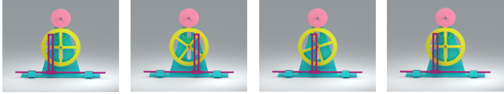
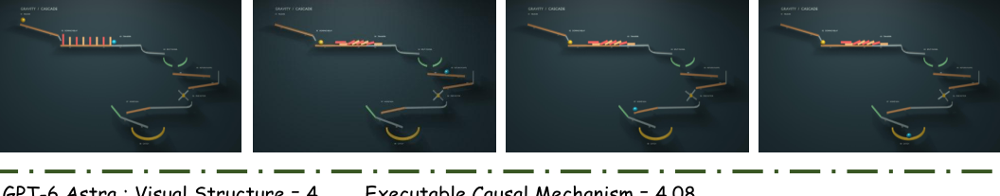
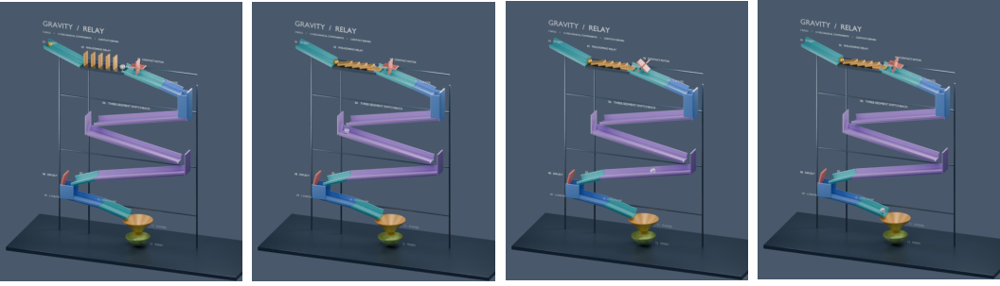
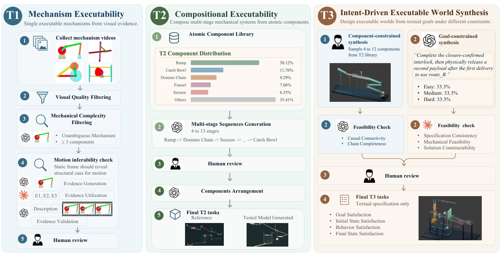

Recover the underlying mechanism
Reason about how components are organized, how they interact, and how effects propagate.
Benchmarking Code-Based Executable 3D World Modeling
We do not benchmark whether models can reproduce what a world looks like,
but whether they can construct an executable world that works.

Visual-to-code reproduces what a world looks like.
Executable world modeling captures how a world actually works.
Reason about how components are organized, how they interact, and how effects propagate.
Operationalize that understanding through the structure and interactions of a code-based world.
From recovering individual mechanisms to composing causal systems and designing worlds from intent.
Infer a mechanical mechanism from a reference image and realize its complete motion in Blender.

Build multi-stage mechanical systems whose execution depends on coordinated spatial and causal relationships.

Construct an executable world from high-level textual requirements, without a direct visual reference.
Organize specified components, or determine the mechanical realization from goals, rules, and state definitions.

Geometry, spatial arrangement, mechanical assembly, and inter-component relationships.
T1 · T2 · T3 / 0–10Motion type, direction, range, and temporal evolution of individual components.
T1 / 0–10Component behavior and the correctness of each stage-to-stage causal handoff.
T2 · T3 / 0–10Strict judgments of initial state, intermediate behavior, and final state requirements.
T3-2 / Binary per requirementExecutability and goal satisfaction are percentages; Visual Structure, Motion, and ECM are scored out of 10. Harness-based settings are identified in model names. See the paper for protocol details.
Repair improves code executability substantially more than the corresponding world modeling metrics.
Strong T1 motion performance does not necessarily transfer to multi-stage causal execution.
Models often satisfy initial-state requirements more reliably than intermediate behavior and final-state requirements.
